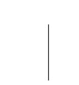
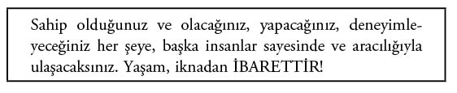
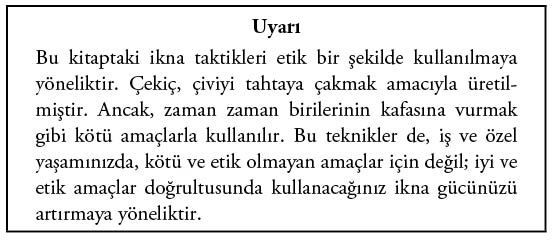
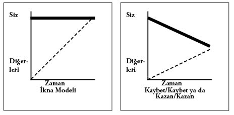

Giriş
Bir insanı, sizin hizmet ya da ürünlerinizi satın almaya, davanıza katkıda bulunmaya, adayınıza oy vermeye nasıl ikna edebilirsiniz? Bu sorunun yanıtı, bu kitapta... “Gizli İkna Taktikleri”, farklı araştırmaları bir araya getiren ve karşınızdaki insanları daha tutarlı ve etkili şekilde ikna etmenize yardımcı olacak yeni sonuçlar çıkaran titiz bir araştırmanın ürünü.
“Gizli İkna Taktikleri”... Bu başlık, el altından, gizlice yürütülen birtakım işler izlenimi uyandırıyor. Bu kitaptaki hedefimiz de zaten bu. Öncelikli amacımız; size, karşınızdaki insanı, kimsenin farkına varamayacağı yöntemlerle ikna etmenizi sağlayacak teknikleri ve stratejileri göstermek. Bunların tamamı gizlidir. Gizli İkna Taktikleri’nin gücünü kişisel ve iş yaşamanızda kullanmanız, sadece etik ve doğru olmakla kalmaz, genel başarınız açısından da şarttır.
Gizli İkna Taktikleri’nin önemli bir bölümü, insanların, belirli koşullardaki davranışlarını isabetli bir şekilde öngörebilmeye yöneliktir.
Tarih boyunca, daha iyi anlamak ve bu yolla davranışlarını tahmin edebilmek amacıyla, insanları kategorize etmeye yönelik yüzlerce, hatta binlerce girişim olmuştur. Bu çabaların tarihine bir göz attığımızda psikoloji, felsefe, nöro-lengüistik programlama (NLP), tüketici psikolojisi ve işletme alanlarının en efsanevi isimleriyle karşılaşırız. Platon, Freud, Jung, B. F. Skinner, Carl Rogers, William James ve Abraham Maslow’dan psikoloji, işletme ve reklamcılık alanındaki çağdaş isimlere dek birçok dahi, insanların, bizi ikna etmeye, davranışlarımızı denetleme ve yönlendirmeye yönelik kolektif düşünce biçimleriyle karar verme süreçlerini anlamaya ve açıklamaya gayret etmiştir.
Myers Briggs Tip Göstergesi, Herman Beyin Egemenliği Göstergesi ile Dil ve Davranış Profili, insanları kategorize etmeye yönelik girişimlerden sadece birkaçı. Bir de, satış alanında kariyer yapmaya uygun olup olmadığınızı belirlemeye yönelik sayısız test bulunuyor. Bunların yanı sıra, Kişilik Çokgeni ve insanları Düşünür, Sosyal, Yönetici ve Aracı olarak sınıflandıran standart açıklamalar vardır.
Tüm davranışlarımızın acıdan kaçınma ve mutlu olma amacı taşıdığını savunan yaygın teoriyi de görmezden gelemeyiz. Peki, bu kadar basit mi? Bu soruyu ilerleyen sayfalarda ele alacağız.
Kullandığınız sözcüklerin yaşadığınız duyguları belirlediğini savunan dil araştırmaları alanı da var. Bu yaklaşıma göre, duygularınızı belirleyen şey, yaşadığınız deneyime yapıştırdığınız yafta; yani, kullandığınız sözcüklerdir. Kökeni 1950’lere dayanan bu araştırmalar, günümüzde de, karşımızdakileri bizim gibi düşünmeye ikna etme amacıyla kullanmayı sürdürdüğümüz ilkelerdir. Ancak, bazı yönlerden oldukça yararlı olan bu teori bile, başkalarını analiz etme konusunda yanlışlarla doludur.

Tüm dünya ikna üzerine kuruludur. Pazarlamacılar ve reklamcılar, her birimizi daha iyi anlayabilmek amacıyla sayısız girişimde bulunuyor. Dikkatimizi çekebilmek, bizi ürün ve hizmetlerini satın almaya, denemeye, adaylarına oy vermeye ve/ya da davalarına katkıda bulunmaya ikna edebilmek için her yıl yüz milyonlarca dolar harcıyorlar. Örneğin; Amerika Birleşik Devletleri’nde yaşıyorsanız, sadece size yılda 3200 dolarlık pazarlama vereklam mesajı geliyor demektir. Sizi ikna etmek için iyi para harcanıyor yani...
Bu kitapta uzun bir Gizli İkna Taktikleri listesi oluşturduk. Başkalarını ikna etmeniz için gerçekleştirmeniz gereken, kafanızın içindeki içsel konuşmalardan başlayarak, ikna etmek istediğiniz, hedeflediğiniz insanla kuracağınız doğrudan iletişime dek aradığınız her şeyi bu kitapta bulacaksınız. Bütün bu teknikleri sizin için araştırdık.
Burada okuduğunuz şeylerin, sizi bu heyecan verici konuda daha fazla şey okumaya yönlendireceğine inanıyoruz. Bilgi edinme konusundaki bu bitmek bilmez arayışta size yardımcı olmak amacıyla kitabın sonunda kapsamlı bir bibliyografiye yer verdik.
Sosyal psikoloji deneylerinden nöro-lengüistik programlamaya, dil araştırmalarına, yaratıcı düşünce çalışmalarına, satış tekniklerine, iş dünyası iletişim becerilerinden kişisel iletişim becerilerine dek uzanan, geniş bir alana yayılan ikna tekniklerini derlediğimiz bu kitapta, iletişim biçiminizi sonsuza dek değiştirecek yepyeni ve şaşırtıcı fikirlerle de karşılaşacaksınız.
Kitapta, karşınızdaki insanları anlamanıza yardımcı olacak bilgilere de yer verdik. Karşınızdaki insanların düşünce ve davranış biçimlerini değiştirmeye ikna etme çabası sırasında soruların gücünden nasıl yararlanacağınızı da ele alacağız.
Hedefimiz, ikna becerilerinizi uzmanlık düzeyine çıkartarak, dilediğiniz şeyi, dilediğiniz anda elde etmenize yardımcı olmaktır. Satış sektöründe çalışıyorsanız, iş yaşamınızın her gününde, tutarlı bir şekilde uygulamaya koymanız koşuluyla, satışlarınızı ve komisyonlarınızı, iki hatta üç katına çıkarmanızı sağlayacak araçlara kavuşmuş olacaksanız. İnanılmaz geldiğini biliyoruz; ancak, işe yaradığını şu ana dek binlerce kişiden duyduk.
İşletme sektöründe çalışıyorsanız, iş arkadaşlarınızı, personelinizi ve/ya da amirlerinizi, fikirlerinize destek vermeleri konusunda ikna etmeniz gerekiyorsa, bu kitabı okumayı sürdürmelisiniz. Bu kitapta, hemen uygulamaya koyabileceğiniz, başkalarını da sizin gibi düşünme konusunda gizlice ikna etmekte kullanabileceğiniz bir yığın teknik bulacaksınız.
Size hızlı ve etkisi kanıtlanmış ikna teknikleri sunarken, elde etmek istediğiniz şeylere odaklanmanıza da yardım edecek olan bu kitap, sık sık okunmaktan sayfaları aşınan bir kılavuz haline gelecek.
Çok az insan kendilerini motive edecek şeyi nasıl bulabileceğini bilir. Yine de sizin ve benim yaptığımız şeyde karar kılarlar. Sadece bu kitapta bulabileceğiniz gizli gözlem ve ince sorgulama tekniklerini kullanarak karşınızdaki insanların düşüncelerini okuma konusunda yüksek başarı oranına ulaşacaksınız. Bu noktadan itibaren, bu kitapta anlatılan ikna tekniklerini, bu kişilerin düşüncelerini ve davranışlarını, gerçekleştirmek istediğiniz hedeflere yönlendirmek için kullanacaksınız.
Dahası, iş ve özel yaşamınızda, diğerlerinden daha ikna edici olan sözcükleri kullanmayı da öğreneceğiz. Bir araya gelerek güçlü hikâyeler oluşturacak olan bu sözcükler, daha fazla insanı, daha rahat bir şekilde ikna etmenize yardımcı olacak.

Kitaptaki teknikler, genellikle doğrudan hedefe yönelik şekilde sunulmaktadır. Bu yolla, karşınızdakilerin de sizin gibi düşünmeye başlamasını sağlamayı kolaylıkla öğrenebileceksiniz. Bütün bunları çok kısa bir zaman dilimi içerisinde gerçekleştirecek, kendi hedeflerinizi gerçekleştirme yolunda çok az dirençle karşılaşacaksınız.
Devam etmeden önce, etik konusunda bir şey daha söylememiz gerekiyor. Bu araştırma alanının etik boyutu hakkında konuştuğumuz insanlar, zaman zaman bu işin çok alçakça ve bencilce olduğunu söylüyor. Bu görüşe, şiddetle karşı çıkıyoruz. Hatta, durum aslında tam tersi... Karşınızdaki insan(lar)ı, karşılaştığınız andaki durumundan daha kötü duruma düşürmemeye; hatta, daha iyi duruma getirmeye yönelik yoğun bir çaba harcıyoruz. Gizli İkna Taktikleri’nin amacını Şekil I.1’de görebilirsiniz.
İkna Modeli, “her iki tarafın da kazandığı” söylenen, bizim “her iki tarafın da kaybettiği” olarak adlandırdığımız, geleneksel modelden çok daha iyidir. Bu geleneksel modelde, fikir birliğine ulaşmak için verilen, her iki tarafa da zararı dokunabilen tavizler, aşağıdaki çizimde net bir şekilde görülebilmektedir.
Bu kitaptaki yöntemler ve taktikler, size, karşınızdakileri gizlice sizin gibi düşünmeye ikna ederek, istediğiniz şeyi elde etme şansını artırma fırsatı sunacak. Bu modelde, hedefinize ulaşmak için daha fazla zaman harcamanız gerekmez; üstelik istediğiniz her şeyi elde ederken, hiçbir taviz vermenize de gerek kalmaz. Hangisini tercih ederdiniz?

Çizim I.1 İkna Modeli, ikna yönteminin taviz yöntemine olan üstünlüğünü gösterir. İstediğiniz her şeyi elde edersiniz.
Bu kitapta, aralarında duygular ve iyi düşünülmüş, iyi hazırlanmış, sonuca yönelik soruların da bulunduğu, en etkili gizli güçlerin bir kısmını ele alacağız.
Kitabın sonlarına doğru, insanlar hakkında 27 özel gözlem bulacaksınız. Bunlar, kendi beyniniz ile mevcut ve aday müşterilerinizin beyinlerine yönelik etkili fikirlerdir. Bunlar, çoğunu zaten bildiğiniz; ancak, şu andan itibaren, çevrenizdekilerin taleplerinize ayak uydurmasını sağlamak amacıyla kullanabileceğiniz fikirlerdir.
Final bölümünde de, bütün bunları bir araya getirerek, bu şaşırtıcı bilgileri, Gizli İkna Gücünüzü, hem özel hem iş yaşamınızda her gün kullanabileceğiniz bir şekle sokacağız.
Az daha unutuyordum. Bir de bonus var! Bu kitapta 10 bin dolar değerinde Gizli İkna Sırları bulacaksınız. Bunlar, doğrudan karşınızdaki insan üzerindeki ikna gücünüzü artırmaya yönelik taktiklerdir. Bu taktikler, ustalıkla uygulanması durumunda, satışlarınızı, kârınızı, birikimlerinizi 10 bin dolar artırmanızı sağlayabilir. Ya da, hedefiniz parayla ölçülemeyecek bir şeyse, bu 10 bin dolar değerindeki Gizli İkna Sırları’nı kullanmanız, paha biçilemez duygular yaşatacaktır.
Bir kitapta bu kadar şey bir arada. Üstelik, hepsi sizin için!
Hadi başlayalım!